#load needed packages. make sure they are installed.
from pandas import read_csv, set_option, merge, DataFrame, concat, read_json
import numpy as np
import matplotlib.pyplot as plt
import seaborn as sns
from sklearn.model_selection import train_test_split
from sklearn.linear_model import LinearRegression, LogisticRegression
from sklearn.preprocessing import LabelEncoder, StandardScaler
from sklearn.metrics import accuracy_score
import statsmodels.api as sm
import statsmodels
from statsmodels.graphics.gofplots import ProbPlot
from scipy import stats
import geojson
import folium
import json
set_option('display.max_columns', None)EV Exploratory Data Analysis
Electric Vehicle Data Analysis
Introduction:
This document is an exploratory data analysis of electric vehicle data. The data was obtained from the IRS and contains information on electric vehicles, their owners, and the tax benefits they receive. The data was cleaned and processed in R and saved as a CSV file. This document will load the data, explore it, and fit a linear regression model to predict the number of electric vehicles in a given zip code.
Setup
Load the data.
base_dir = '../../'
df = read_csv(base_dir + 'data/processed-data/brand_model_year_tax_data.csv')
columns_list = df.columns.tolist()
for i in columns_list:
print(i.strip())
numeric_cols = columns_list[28:]
df.columns.tolist()City
State
ZIPCODE
Model Year
Make
Model
Electric Vehicle Type
Clean Alternative Fuel Vehicle (CAFV) Eligibility
Electric Range
Vehicle Count
The State Federal Information Processing System (FIPS) code
The State associated with the ZIP code
Number of returns [3]
Number of single returns
Number of joint returns
Number of head of household returns
Number of electronically filed returns
Number of computer prepared paper returns
Number of returns with paid preparer's signature
Number of returns with direct deposit
Number of returns with virtual currency indicator
Number of individuals [4]
Total number of volunteer prepared returns [5]
Number of volunteer income tax assistance (VITA) prepared returns [5]
Number of tax counseling for the elderly (TCE) prepared returns [5]
Number of volunteer prepared returns with Earned Income Credit [5]
Number of refund anticipation check returns [6]
Number of elderly returns [7]
Adjust gross income (AGI) [8]
Total income amount
Salaries and wages amount
Taxable interest amount
Ordinary dividends amount
Qualified dividends amount [9]
State and local income tax refunds amount
Business or professional net income (less loss) amount
Net capital gain (less loss) amount
Taxable individual retirement arrangements distributions amount
Taxable pensions and annuities amount
Number of farm returns
Unemployment compensation amount [10]
Taxable Social Security benefits amount
Partnership/S-corp net income (less loss) amount
Total statutory adjustments amount
Educator expenses amount
Self-employed (Keogh) retirement plans amount
Self-employed health insurance deduction amount
Individual retirement arrangement payments amount
Student loan interest deduction amount
Charitable contributions if took standard deduction
Total standard deduction amount
Basic standard deduction amount
Additional standard deduction amount
Total itemized deductions amount
Amount of AGI for itemized returns
Total medical and dental expense deduction amount
State and local income taxes amount
State and local general sales tax amount
Real estate taxes amount
Personal property taxes amount
Limited state and local taxes
Total taxes paid amount
Home mortgage interest paid amount
Home mortgage from personal seller amount
Deductible points amount
Qualified mortgage insurance premiums amount
Investment interest paid amount
Total charitable contributions amount
Other non-limited miscellaneous deductions amount
Qualified business income deduction
Taxable income amount
Income tax before credits amount
Alternative minimum tax amount
Excess advance premium tax credit repayment amount
Total tax credits amount
Foreign tax credit amount
Child and dependent care credit amount
Nonrefundable education credit amount
Retirement savings contribution credit amount
Nonrefundable child and other dependent credit amount
Residential energy tax credit amount
Self-employment tax amount
Total premium tax credit amount
Advance premium tax credit amount
Total tax payments amount
Earned income credit amount [12]
Excess earned income credit (refundable) amount [13]
Refundable child tax credit or additional child tax credit amount
Refundable education credit amount
Net premium tax credit amount
Qualified sick and family leave credit for leave taken before April 1, 2021 amount
Refundable child and dependent care credit
Qualified sick and family leave credit for leave taken after March 31, 2021
Recovery rebate credit amount [15]
Economic impact payment third round amount [16, 17]
Income tax after credits amount
Total tax liability amount [18]
Additional Medicare tax amount
Net investment income tax amount
Tax due at time of filing amount [19]
Total overpayments amount
Overpayments refunded amount [20]
Credited to next year’s estimated tax amount['City',
'State',
'ZIPCODE',
'Model Year',
'Make',
'Model',
'Electric Vehicle Type',
'Clean Alternative Fuel Vehicle (CAFV) Eligibility',
'Electric Range',
'Vehicle Count',
'The State Federal Information Processing System (FIPS) code',
'The State associated with the ZIP code',
'Number of returns [3]',
'Number of single returns',
'Number of joint returns',
'Number of head of household returns',
'Number of electronically filed returns',
'Number of computer prepared paper returns',
"Number of returns with paid preparer's signature",
'Number of returns with direct deposit',
'Number of returns with virtual currency indicator',
'Number of individuals [4]',
'Total number of volunteer prepared returns [5]',
'Number of volunteer income tax assistance (VITA) prepared returns [5]',
'Number of tax counseling for the elderly (TCE) prepared returns [5]',
'Number of volunteer prepared returns with Earned Income Credit [5]',
'Number of refund anticipation check returns [6]',
'Number of elderly returns [7]',
'Adjust gross income (AGI) [8]',
'Total income amount',
'Salaries and wages amount',
'Taxable interest amount',
'Ordinary dividends amount',
'Qualified dividends amount [9]',
'State and local income tax refunds amount',
'Business or professional net income (less loss) amount',
'Net capital gain (less loss) amount',
'Taxable individual retirement arrangements distributions amount',
'Taxable pensions and annuities amount',
'Number of farm returns',
'Unemployment compensation amount [10]',
'Taxable Social Security benefits amount',
'Partnership/S-corp net income (less loss) amount',
'Total statutory adjustments amount',
'Educator expenses amount',
'Self-employed (Keogh) retirement plans amount',
'Self-employed health insurance deduction amount',
'Individual retirement arrangement payments amount',
'Student loan interest deduction amount',
'Charitable contributions if took standard deduction',
'Total standard deduction amount',
'Basic standard deduction amount',
'Additional standard deduction amount',
'Total itemized deductions amount',
'Amount of AGI for itemized returns',
'Total medical and dental expense deduction amount',
'State and local income taxes amount',
'State and local general sales tax amount',
'Real estate taxes amount',
'Personal property taxes amount',
'Limited state and local taxes',
'Total taxes paid amount',
'Home mortgage interest paid amount',
'Home mortgage from personal seller amount',
'Deductible points amount',
'Qualified mortgage insurance premiums amount',
'Investment interest paid amount',
'Total charitable contributions amount',
'Other non-limited miscellaneous deductions amount',
'Qualified business income deduction',
'Taxable income amount',
'Income tax before credits amount',
'Alternative minimum tax amount',
'Excess advance premium tax credit repayment amount',
'Total tax credits amount',
'Foreign tax credit amount',
'Child and dependent care credit amount',
'Nonrefundable education credit amount',
'Retirement savings contribution credit amount',
'Nonrefundable child and other dependent credit amount',
'Residential energy tax credit amount',
'Self-employment tax amount',
'Total premium tax credit amount',
'Advance premium tax credit amount',
'Total tax payments amount',
'Earned income credit amount [12] ',
'Excess earned income credit (refundable) amount [13] ',
'Refundable child tax credit or additional child tax credit amount',
'Refundable education credit amount',
'Net premium tax credit amount',
'Qualified sick and family leave credit for leave taken before April 1, 2021 amount',
'Refundable child and dependent care credit',
'Qualified sick and family leave credit for leave taken after March 31, 2021',
'Recovery rebate credit amount [15]',
'Economic impact payment third round amount [16, 17]',
'Income tax after credits amount ',
'Total tax liability amount [18] ',
'Additional Medicare tax amount',
'Net investment income tax amount',
'Tax due at time of filing amount [19] ',
'Total overpayments amount',
'Overpayments refunded amount [20] ',
'Credited to next year’s estimated tax amount']Vehicle Brand Aggregation
sns.set_style('darkgrid')
zip_code_count = df.groupby(['ZIPCODE']).agg({
'Vehicle Count': 'sum',
}).reset_index()The figure contains two histograms showing the distribution of vehicle counts by ZIP code. The top plot displays the original distribution, with most ZIP codes having a lower vehicle count and a few having very high counts, resulting in a skewed distribution. The bottom plot shows the log-transformed distribution, which spreads out the data and makes it easier to visualize lower counts. Both plots use a horizontal bar layout for easy comparison.
fig, axes = plt.subplots(2, 1, figsize=(15,15))
sns.histplot(ax=axes[0], data=zip_code_count, y=zip_code_count['Vehicle Count'])
log_zip_code_count = zip_code_count.copy()
log_zip_code_count['Vehicle Count'] = np.log(zip_code_count['Vehicle Count'])
sns.histplot(ax=axes[1], data=log_zip_code_count, y=log_zip_code_count['Vehicle Count'])
zip_code_count| ZIPCODE | Vehicle Count | |
|---|---|---|
| 0 | 98001 | 258 |
| 1 | 98002 | 132 |
| 2 | 98003 | 181 |
| 3 | 98004 | 916 |
| 4 | 98005 | 433 |
| ... | ... | ... |
| 456 | 99360 | 2 |
| 457 | 99361 | 6 |
| 458 | 99362 | 142 |
| 459 | 99402 | 7 |
| 460 | 99403 | 19 |
461 rows × 2 columns
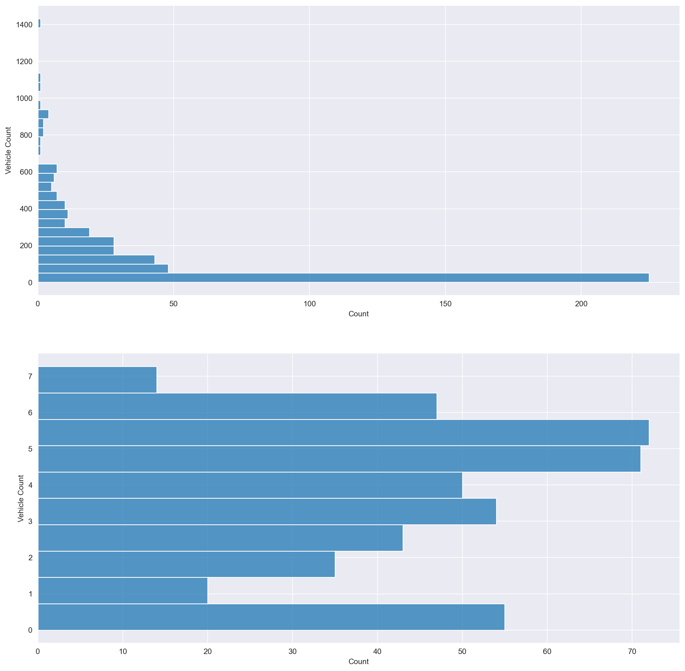
The image shows two box plots of vehicle counts by ZIP code. The top plot displays the original vehicle counts, revealing most counts below 200 with many outliers up to 1000. The bottom plot uses log-transformed vehicle counts, normalizing the data and reducing the impact of outliers. Both plots highlight the distribution, central tendency, and variability of vehicle counts across ZIP codes.
TO DO
# us_zips_df = read_csv(base_dir + 'data/raw-data/uszips.csv')
# wa_zips = us_zips_df.loc[us_zips_df['state_id'] == 'WA']
# wa_zips = wa_zips[['ZIPCODE', 'lat', 'lng', 'population']]
# merge_zips = merge(wa_zips, zip_code_count, on='ZIPCODE')
# # print(merge_zips)
# test = base_dir + 'data/raw-data/counties.geojson'
# with open(test) as f:
# gj = geojson.load(f)
# print(gj['features'])
# countries = ["53"]
# new_list = []
# features = gj['features'][0]['properties']['STATEFP']
# features = gj['features']
# print(features[0])
# for i in features:
# # print(i)
# if i['properties']['STATEFP'] == '53':
# new_list.append(i)
# else:
# pass
# final = json.dumps(new_list, indent=2)
# print(gj)
# mapit = folium.Map(location=[122.511983, 37.77113])
# for i in features:
# if i['properties']['STATEFP'] == '53':
# print(i)
# folium.Choropleth(geo_data=i['geometry']['coordinates'][0][0],
# data=merge_zips,
# columns=['lat', 'lng', 'Vehicle Count'],
# key_on='geometry.coordinates',
# fill_color='magma',
# line_color='magma'
# ).add_to(mapit)
# mapit.save('test.html')
# coordinates = []
# for zip_code in zip_code_count['ZIPCODE']:
# print(zip_code)
# geocode_result = geopandas.
# geocode_result = gmaps.geocode(zip_code)
# lat = geocode_result[0][‘geometry’][‘location’][‘lat’]
# lng = geocode_result[0][‘geometry’][‘location’][‘lng’]
# coordinates.append((lat, lng))betctuun fig, axes = plt.subplots(2, 1, figsize=(15,15)) sns.boxplot(ax=axes[0], data=zip_code_count, x=zip_code_count['Vehicle Count']) log_zip_code_count = zip_code_count.copy() log_zip_code_count['Vehicle Count'] = np.log(zip_code_count['Vehicle Count']) sns.boxplot(ax=axes[1], data=log_zip_code_count, x=log_zip_code_count['Vehicle Count'])
MAKE AND ELECTRIC VEHICLE TYPE
sns.set_style('darkgrid')
make_ev_type = df.groupby(['Make']).agg({
'Vehicle Count': 'sum',
}).reset_index()
fig, axes = plt.subplots(2, 1, figsize=(15,15))
sns.histplot(ax=axes[0], data=make_ev_type, y=make_ev_type['Vehicle Count'])
log_make_ev_type = make_ev_type.copy()
log_make_ev_type['Vehicle Count'] = np.log(make_ev_type['Vehicle Count'])
sns.histplot(ax=axes[1], data=log_make_ev_type, y=log_make_ev_type['Vehicle Count'])<Axes: xlabel='Count', ylabel='Vehicle Count'>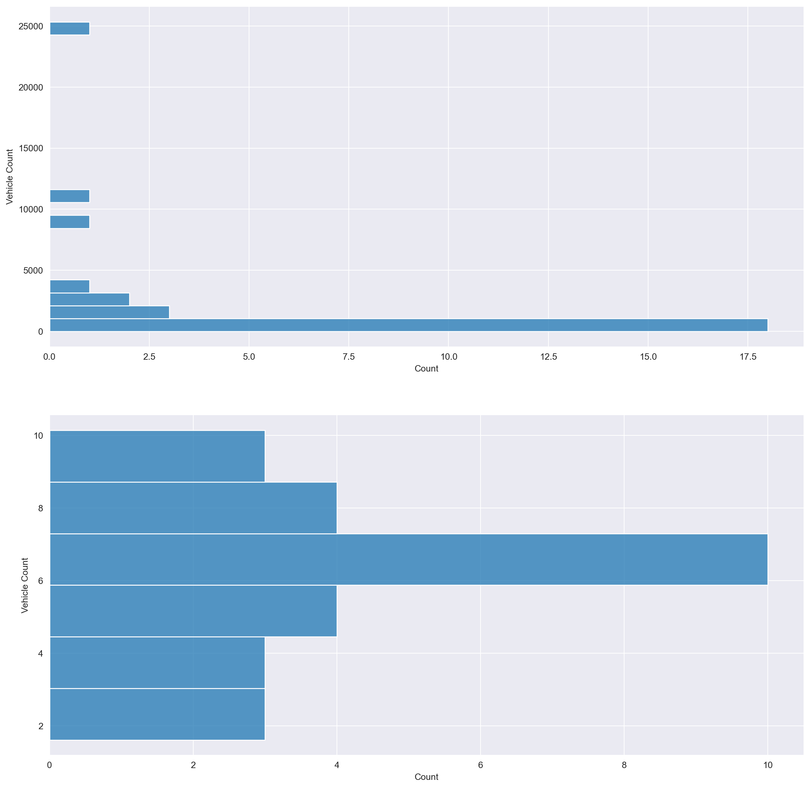
fig, axes = plt.subplots(2, 1, figsize=(15,15))
sns.boxplot(ax=axes[0], data=make_ev_type)
log_make_ev_type = make_ev_type.copy()
log_make_ev_type['Vehicle Count'] = np.log(make_ev_type['Vehicle Count'])
sns.boxplot(ax=axes[1], data=log_make_ev_type)<Axes: >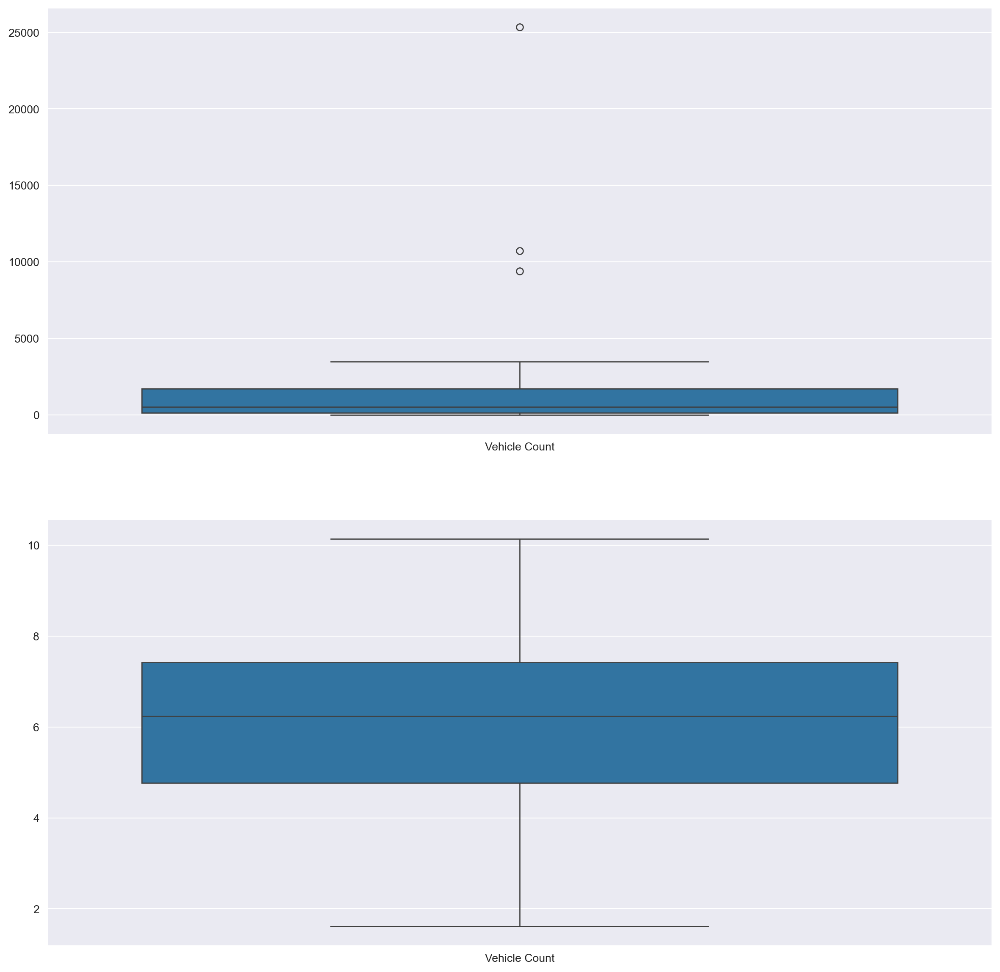
MAKE AND Clean Alt Fuel
sns.set_style('darkgrid')
make_ev_type = df.groupby(['Make', 'Clean Alternative Fuel Vehicle (CAFV) Eligibility']).agg({
'Vehicle Count': 'sum',
}).reset_index()
fig, axes = plt.subplots(2, 1, figsize=(15,15))
sns.histplot(ax=axes[0], data=make_ev_type, y=make_ev_type['Vehicle Count'])
log_make_ev_type = make_ev_type.copy()
log_make_ev_type['Vehicle Count'] = np.log(make_ev_type['Vehicle Count'])
sns.histplot(ax=axes[1], data=log_make_ev_type, y=log_make_ev_type['Vehicle Count'])<Axes: xlabel='Count', ylabel='Vehicle Count'>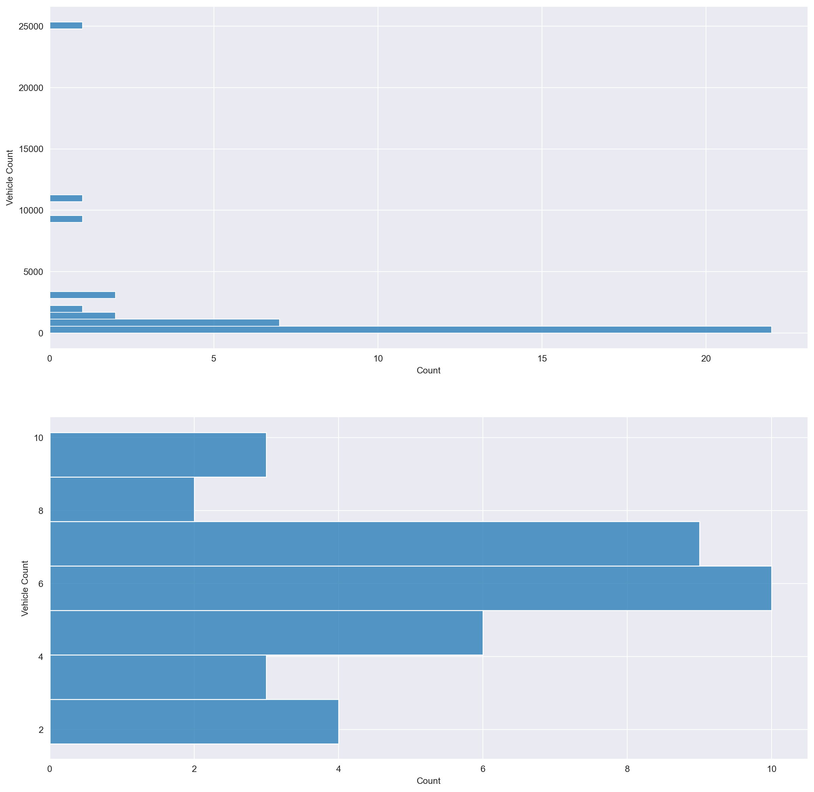
fig, axes = plt.subplots(2, 1, figsize=(15,15))
sns.boxplot(ax=axes[0], data=make_ev_type, x=make_ev_type['Clean Alternative Fuel Vehicle (CAFV) Eligibility'], y=make_ev_type['Vehicle Count'])
log_make_ev_type = make_ev_type.copy()
log_make_ev_type['Vehicle Count'] = np.log(make_ev_type['Vehicle Count'])
sns.boxplot(ax=axes[1], data=log_make_ev_type, x=make_ev_type['Clean Alternative Fuel Vehicle (CAFV) Eligibility'], y=log_make_ev_type['Vehicle Count'])<Axes: xlabel='Clean Alternative Fuel Vehicle (CAFV) Eligibility', ylabel='Vehicle Count'>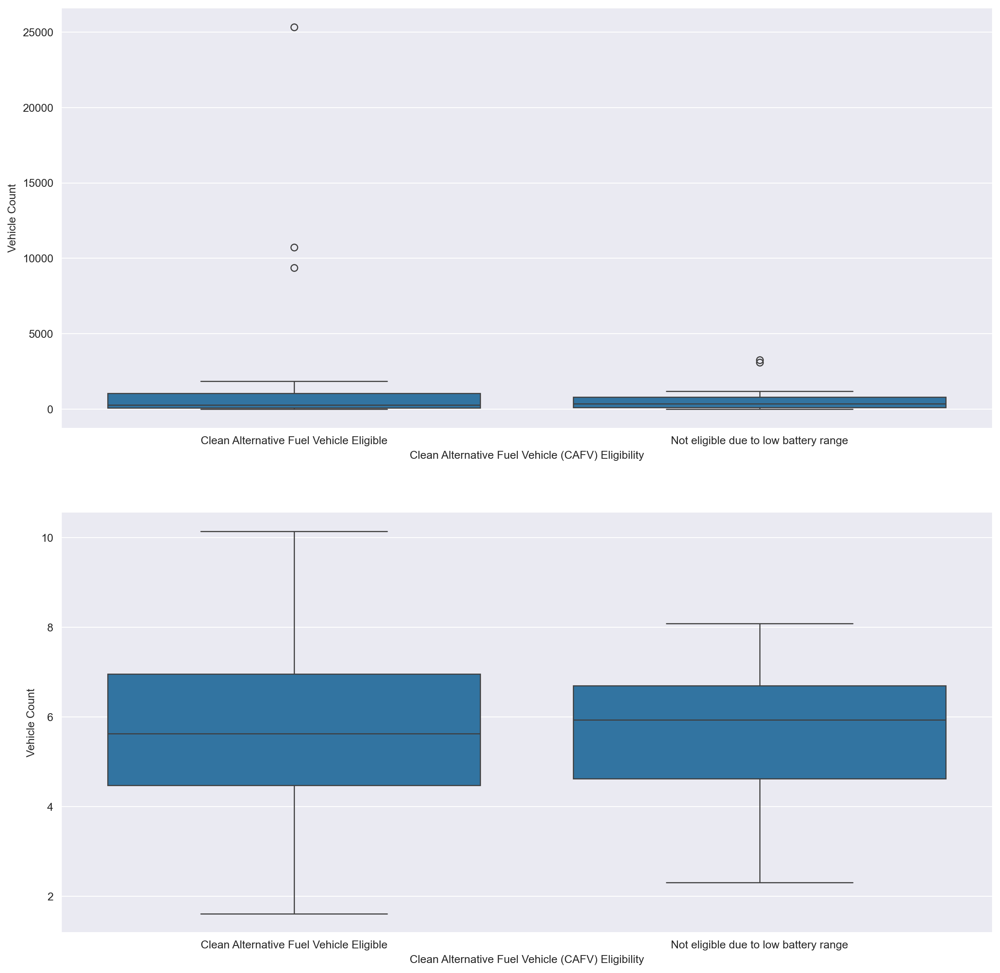
Mean
brand_df = df[[
'Residential energy tax credit amount', 'Total income amount', 'Vehicle Count'
]]
fig, axes = plt.subplots(1, 1, figsize=(15,15))
sns.heatmap(data=brand_df)
brand_df.corr()
# brand_df['Electric Range'] = np.log(brand_df['Electric Range'])
# sns.boxplot(ax=axes[1], data=brand_df, y=brand_df['Electric Range'])| Residential energy tax credit amount | Total income amount | Vehicle Count | |
|---|---|---|---|
| Residential energy tax credit amount | 1.000000 | 0.503153 | 0.154667 |
| Total income amount | 0.503153 | 1.000000 | 0.213034 |
| Vehicle Count | 0.154667 | 0.213034 | 1.000000 |
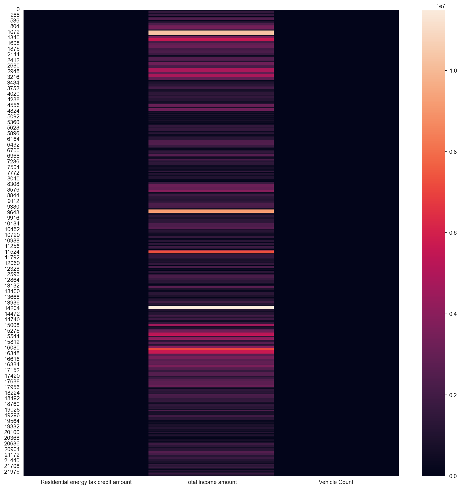
new_brand_df = df.groupby(['ZIPCODE']).agg({
'Total income amount': 'sum',
'Electric Range': 'count'
}).reset_index(drop=True).rename(columns={
'Electric Range': 'Vehicle Count'
})
fig, axes = plt.subplots(2, 1, figsize=(15,15))
new_brand_df['Total income amount'] = new_brand_df['Total income amount'].astype(int)
slope, intercept, r_value, p_value, std_err = stats.linregress(new_brand_df['Total income amount'],new_brand_df['Vehicle Count'])
sns.regplot(ax=axes[0], data=new_brand_df, y='Vehicle Count', x='Total income amount',
ci=None,
label=f"y={0:.1f}x+{1:.1f}\nr-sq: {r_value.round(3)}".format(slope, intercept)).legend(loc="best")
new_brand_df['Vehicle Count'] = np.log(new_brand_df['Vehicle Count'])
new_brand_df['Total income amount'] = np.log(new_brand_df['Total income amount'])
slope, intercept, r_value, p_value, std_err = stats.linregress(new_brand_df['Total income amount'],new_brand_df['Vehicle Count'])
sns.regplot(ax=axes[1],
data=new_brand_df,
x='Total income amount',
y='Vehicle Count',
ci=None,
label=f"y={0:.1f}x+{1:.1f}\nr-sq: {r_value.round(3)}".format(slope, intercept)).legend(loc="best")<matplotlib.legend.Legend at 0x13c801610>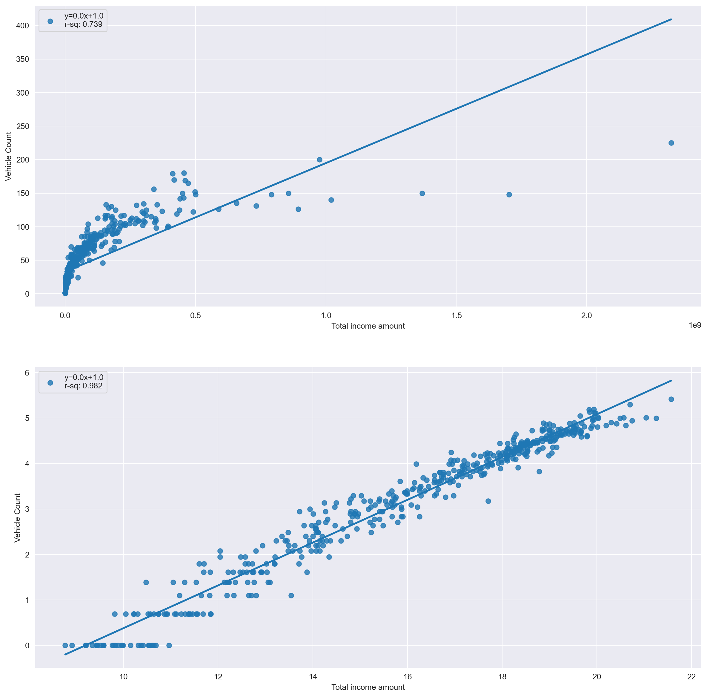
base_dir = '../../'
df = read_csv(base_dir + 'data/processed-data/brand_model_year_tax_data.csv')
columns_list = df.columns.tolist()
for i in columns_list:
print(i.strip())
# numeric_cols = columns_list[28:]
# df.columns.tolist()City
State
ZIPCODE
Model Year
Make
Model
Electric Vehicle Type
Clean Alternative Fuel Vehicle (CAFV) Eligibility
Electric Range
Vehicle Count
The State Federal Information Processing System (FIPS) code
The State associated with the ZIP code
Number of returns [3]
Number of single returns
Number of joint returns
Number of head of household returns
Number of electronically filed returns
Number of computer prepared paper returns
Number of returns with paid preparer's signature
Number of returns with direct deposit
Number of returns with virtual currency indicator
Number of individuals [4]
Total number of volunteer prepared returns [5]
Number of volunteer income tax assistance (VITA) prepared returns [5]
Number of tax counseling for the elderly (TCE) prepared returns [5]
Number of volunteer prepared returns with Earned Income Credit [5]
Number of refund anticipation check returns [6]
Number of elderly returns [7]
Adjust gross income (AGI) [8]
Total income amount
Salaries and wages amount
Taxable interest amount
Ordinary dividends amount
Qualified dividends amount [9]
State and local income tax refunds amount
Business or professional net income (less loss) amount
Net capital gain (less loss) amount
Taxable individual retirement arrangements distributions amount
Taxable pensions and annuities amount
Number of farm returns
Unemployment compensation amount [10]
Taxable Social Security benefits amount
Partnership/S-corp net income (less loss) amount
Total statutory adjustments amount
Educator expenses amount
Self-employed (Keogh) retirement plans amount
Self-employed health insurance deduction amount
Individual retirement arrangement payments amount
Student loan interest deduction amount
Charitable contributions if took standard deduction
Total standard deduction amount
Basic standard deduction amount
Additional standard deduction amount
Total itemized deductions amount
Amount of AGI for itemized returns
Total medical and dental expense deduction amount
State and local income taxes amount
State and local general sales tax amount
Real estate taxes amount
Personal property taxes amount
Limited state and local taxes
Total taxes paid amount
Home mortgage interest paid amount
Home mortgage from personal seller amount
Deductible points amount
Qualified mortgage insurance premiums amount
Investment interest paid amount
Total charitable contributions amount
Other non-limited miscellaneous deductions amount
Qualified business income deduction
Taxable income amount
Income tax before credits amount
Alternative minimum tax amount
Excess advance premium tax credit repayment amount
Total tax credits amount
Foreign tax credit amount
Child and dependent care credit amount
Nonrefundable education credit amount
Retirement savings contribution credit amount
Nonrefundable child and other dependent credit amount
Residential energy tax credit amount
Self-employment tax amount
Total premium tax credit amount
Advance premium tax credit amount
Total tax payments amount
Earned income credit amount [12]
Excess earned income credit (refundable) amount [13]
Refundable child tax credit or additional child tax credit amount
Refundable education credit amount
Net premium tax credit amount
Qualified sick and family leave credit for leave taken before April 1, 2021 amount
Refundable child and dependent care credit
Qualified sick and family leave credit for leave taken after March 31, 2021
Recovery rebate credit amount [15]
Economic impact payment third round amount [16, 17]
Income tax after credits amount
Total tax liability amount [18]
Additional Medicare tax amount
Net investment income tax amount
Tax due at time of filing amount [19]
Total overpayments amount
Overpayments refunded amount [20]
Credited to next year’s estimated tax amountZIP CODE ONLY
amount_brand_df = df.groupby(['ZIPCODE'])[numeric_cols].mean(numeric_only=True).reset_index()
brand_df = df.groupby(['ZIPCODE']).agg({
'Vehicle Count': 'sum',
'Electric Range': 'mean'
}).reset_index()
merged_df = merge(brand_df, amount_brand_df, on=['ZIPCODE'])
merged_df = merged_df.sort_values('Vehicle Count', ascending=False)
X_df = merged_df
Y_df = merged_df[['Vehicle Count']]
Y_df = np.log(Y_df)
X_df = merged_df.drop(['Vehicle Count', 'Electric Range', 'ZIPCODE'], axis=1)
X = np.array(X_df)
x = sm.add_constant(X)
Y = np.array(Y_df)
X_train, X_test, y_train, y_test = train_test_split(x,Y,
random_state=104,
test_size=0.2,
shuffle=True)
print(X_train.shape)
print(y_train.shape)
model = sm.OLS(y_train, X_train)
results = model.fit()
results.summary()
p_values = results.pvalues
p_df = DataFrame()
p_df['Feature'] = X_df.columns
p_df['p-value'] = results.pvalues[1:]
feat_list = []
p_val_list = []
for idx, row in p_df.iterrows():
if row['p-value'] < .05:
feat_list.append(row['Feature'])
p_val_list.append(row['p-value'])
else:
continue
new_p_df = DataFrame()
new_p_df['Feature'] = feat_list
new_p_df['p-value'] = p_val_list
X = np.array(X_df[new_p_df['Feature']])
Y = np.array(Y_df)
x = sm.add_constant(X)
X_train, X_test, y_train, y_test = train_test_split(x,Y,
random_state=104,
test_size=0.2,
shuffle=True)
model2 = sm.OLS(y_train, X_train)
results2 = model2.fit()
results2.summary()
p3_values = results2.pvalues
new3 = DataFrame()
new3['Feature'] = new_p_df['Feature']
new3['p-value'] = p3_values[1:]
new3
feat_list3 = []
p_val_list3 = []
for idx, row in new3.iterrows():
if row['p-value'] < .05:
feat_list3.append(row['Feature'])
p_val_list3.append(row['p-value'])
else:
continue
final3_df = DataFrame()
final3_df['Feature'] = feat_list3
final3_df['p-value'] = p_val_list3
final3_df
X = np.array(X_df[final3_df['Feature']])
Y = np.array(Y_df)
x = sm.add_constant(X)
X_train, X_test, y_train, y_test = train_test_split(x,Y,
random_state=104,
test_size=0.2,
shuffle=True)
model3 = sm.OLS(y_train, X_train)
results3 = model3.fit()
Y_pred = results3.predict(X_train).astype(int)
features = ['constant'] + final3_df['Feature'].tolist()
X = DataFrame(X_train, columns=features)
Y = DataFrame(y_train, columns=['Vehicle Count'])
dataframe = concat([X, Y], axis=1)
dataframe
results3.summary()
features(368, 76)
(368, 1)['constant',
'Adjust gross income (AGI) [8]',
'Total income amount',
'State and local income tax refunds amount',
'Taxable pensions and annuities amount',
'Total statutory adjustments amount',
'Self-employed (Keogh) retirement plans amount',
'Total standard deduction amount',
'Basic standard deduction amount',
'Additional standard deduction amount',
'Alternative minimum tax amount',
'Child and dependent care credit amount']# model values
model_fitted_y = results3.fittedvalues
# model residuals
model_residuals = results3.resid
# normalized residuals
model_norm_residuals = results3.get_influence().resid_studentized_internal
# absolute squared normalized residuals
model_norm_residuals_abs_sqrt = np.sqrt(np.abs(model_norm_residuals))
# absolute residuals
model_abs_resid = np.abs(model_residuals)
# leverage, from statsmodels internals
model_leverage = results3.get_influence().hat_matrix_diag
# cook's distance, from statsmodels internals
model_cooks = results3.get_influence().cooks_distance[0]
plot_lm_1 = plt.figure()
plot_lm_1.axes[0] = sns.residplot(x=model_fitted_y, y=dataframe.columns[-1], data=dataframe,
lowess=True,
scatter_kws={'alpha': 0.5},
line_kws={'color': 'red', 'lw': 1, 'alpha': 0.8})
plot_lm_1.axes[0].set_title('Residuals vs Fitted')
plot_lm_1.axes[0].set_xlabel('Fitted values')
plot_lm_1.axes[0].set_ylabel('Residuals')
df = DataFrame()
df['res'] = model_residuals
df['fitted'] = model_fitted_y
df['count'] = dataframe['Vehicle Count']
# df['ZIPCODE'] = dataframe['ZIPCODE']
maxr = np.max(model_residuals)
df.sort_values('fitted', ascending=False)| res | fitted | count | |
|---|---|---|---|
| 92 | -1.574220 | 8.568153 | 6.993933 |
| 317 | -1.506110 | 8.143368 | 6.637258 |
| 142 | -0.758350 | 8.025177 | 7.266827 |
| 104 | -1.119208 | 7.939224 | 6.820016 |
| 359 | -1.153209 | 7.925144 | 6.771936 |
| ... | ... | ... | ... |
| 282 | -0.470297 | 0.470297 | 0.000000 |
| 315 | 0.920935 | 0.465360 | 1.386294 |
| 255 | -0.280249 | 0.280249 | 0.000000 |
| 149 | 0.745540 | -0.052393 | 0.693147 |
| 253 | 1.227998 | -0.129386 | 1.098612 |
368 rows × 3 columns
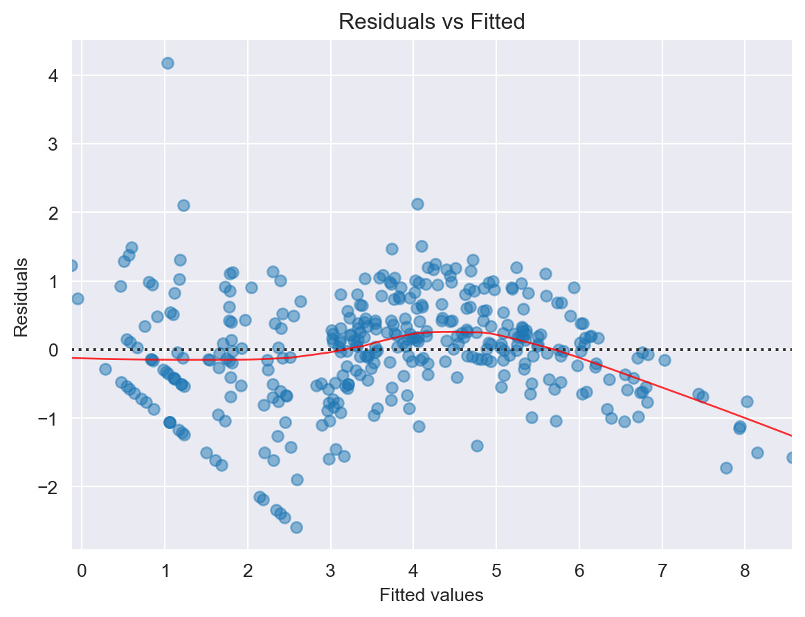
Normal Q-Q Plot
This plot shows if the residuals are normally distributed. A good normal QQ plot has all of the residuals lying on or close to the red line.
QQ = ProbPlot(model_norm_residuals)
plot_lm_2 = QQ.qqplot(line='45', alpha=0.5, color='#4C72B0', lw=1)
plot_lm_2.axes[0].set_title('Normal Q-Q')
plot_lm_2.axes[0].set_xlabel('Theoretical Quantiles')
plot_lm_2.axes[0].set_ylabel('Standardized Residuals')
# annotations
abs_norm_resid = np.flip(np.argsort(np.abs(model_norm_residuals)), 0)
abs_norm_resid_top_3 = abs_norm_resid[:3]
for r, i in enumerate(abs_norm_resid_top_3):
plot_lm_2.axes[0].annotate(i,
xy=(np.flip(QQ.theoretical_quantiles, 0)[r],
model_norm_residuals[i]))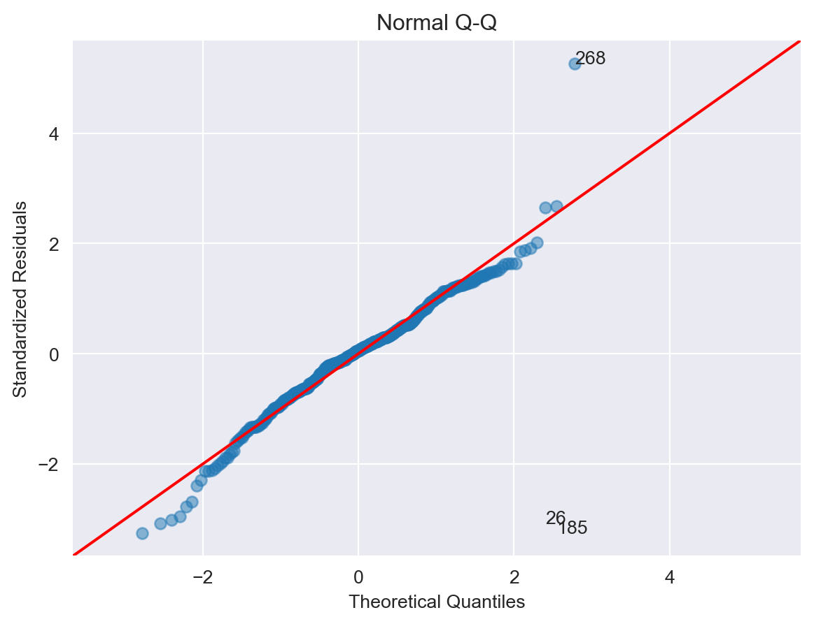
Scale-Location
This plot is a way to check if the residuals suffer from non-constant variance, aka heteroscedasticity.
plot_lm_3 = plt.figure()
plt.scatter(model_fitted_y, model_norm_residuals_abs_sqrt, alpha=0.5)
sns.regplot(
x=model_fitted_y,
y=model_norm_residuals_abs_sqrt,
scatter=False,
ci=False,
lowess=True,
line_kws={'color': 'red', 'lw': 1, 'alpha': 0.8})
plot_lm_3.axes[0].set_title('Scale-Location')
plot_lm_3.axes[0].set_xlabel('Fitted values')
plot_lm_3.axes[0].set_ylabel('$\sqrt{|Standardized Residuals|}$')
# annotations
abs_sq_norm_resid = np.flip(np.argsort(model_norm_residuals_abs_sqrt), 0)
abs_sq_norm_resid_top_3 = abs_sq_norm_resid[:3]
for r, i in enumerate(abs_sq_norm_resid_top_3):
plot_lm_3.axes[0].annotate(
i,
xy=(model_fitted_y[i],
model_norm_residuals_abs_sqrt[i]))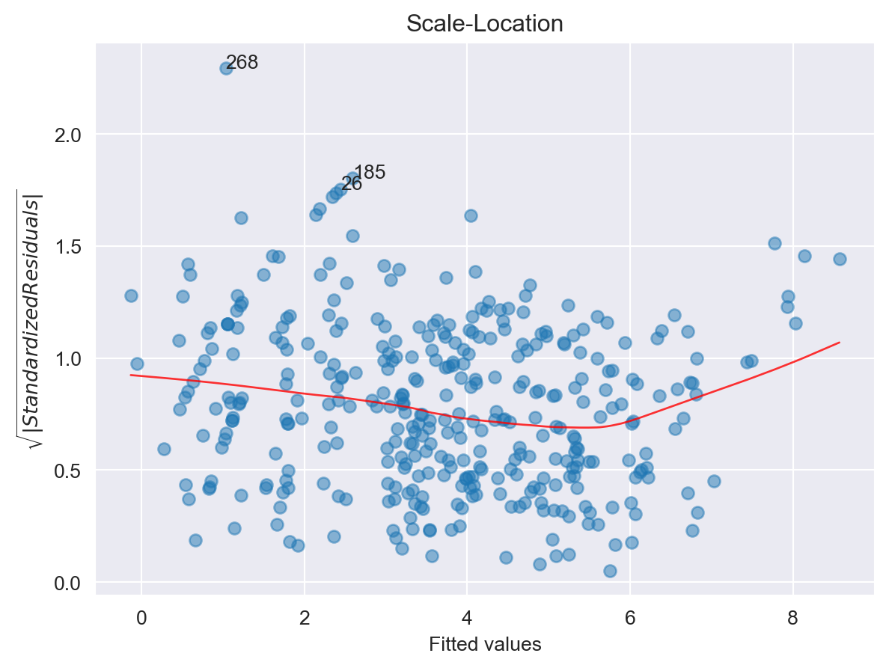
Residuals vs. Leverage
Unlike outliers, which have an unusually large y value, leverage points have extreme x values. This may not seem so bad at face value, but it can have damaging effects on the model because the β coefficients are very sensitive to leverage points. The purpose of the Residuals vs Leverage plot is to identify these problematic observations.
plot_lm_4 = plt.figure()
plt.scatter(model_leverage, model_norm_residuals, alpha=0.5)
sns.regplot(x=model_leverage, y=model_norm_residuals,
scatter=False,
ci=False,
lowess=True,
line_kws={'color': 'red', 'lw': 1, 'alpha': 0.8})
plot_lm_4.axes[0].set_xlim(0, np.max(model_leverage)+0.01)
plot_lm_4.axes[0].set_ylim(-3, 5)
plot_lm_4.axes[0].set_title('Residuals vs Leverage')
plot_lm_4.axes[0].set_xlabel('Leverage')
plot_lm_4.axes[0].set_ylabel('Standardized Residuals')
# annotations
leverage_top_3 = np.flip(np.argsort(model_cooks), 0)[:3]
for i in leverage_top_3:
plot_lm_4.axes[0].annotate(i,
xy=(model_leverage[i],
model_norm_residuals[i]))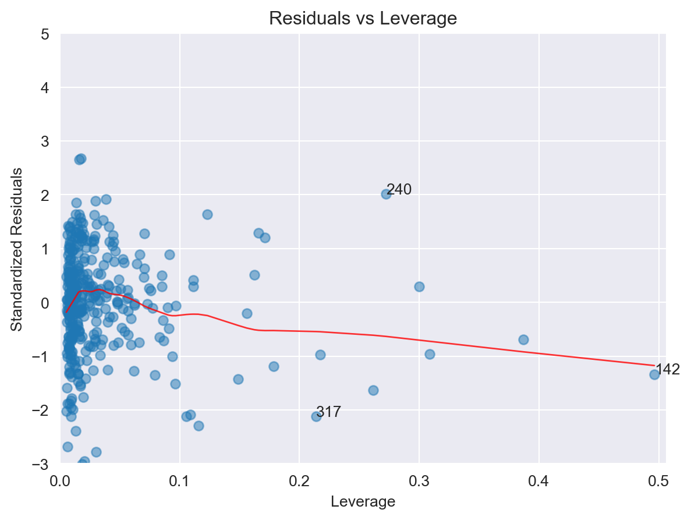
def cookdplot(model, ax=None):
if ax is None:
fig, ax = plt.subplots()
cooks_d = model.get_influence().cooks_distance[0]
ax.vlines(range(len(cooks_d)),0,cooks_d)
# annotations
cookd_top_3 = np.flip(np.argsort(cooks_d), 0)[:3]
for i in cookd_top_3:
ax.annotate(i, xy=(i, cooks_d[i]),color = 'C3')
ax.set_title("Cook's Distance" , fontweight="bold")
ax.set_xlabel('Obs. Number')
ax.set_ylabel("Cook's distance")
return ax
cookdplot(results3)
plt.show()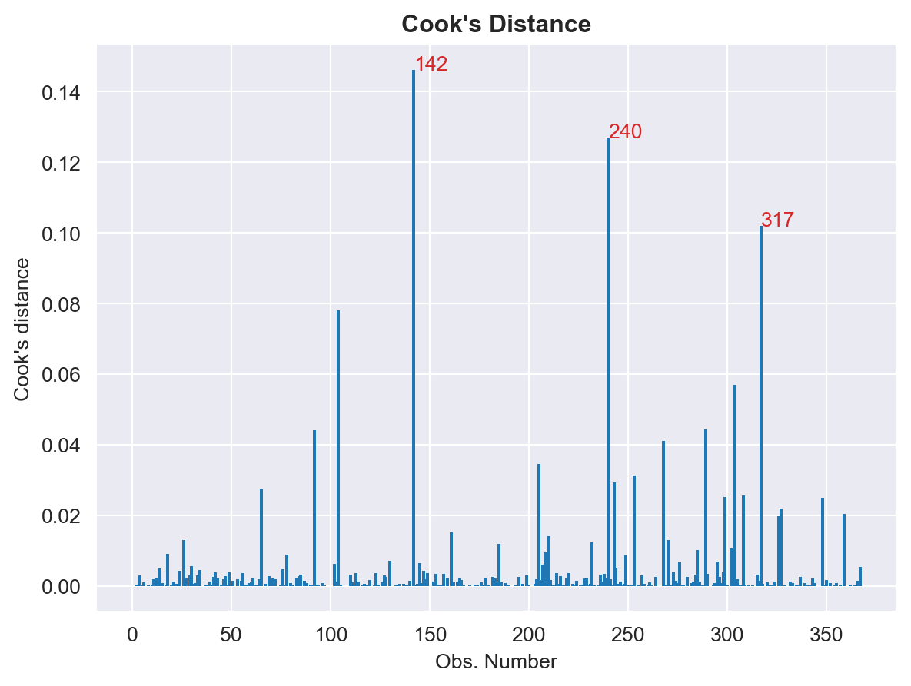
SECOND MODEL
# merged_df = merged_df.loc[(merged_df['Vehicle Count'] != 1.94591)]
# print(merged_df.loc[merged_df['Vehicle Count'] < 5].sort_values('Vehicle Count', ascending=False).head(30))
X_df = merged_df.copy()
Y_df = merged_df[['Vehicle Count']]
Y_df = np.log(Y_df)
X_features = [
# 'Adjust gross income (AGI) [8]',
# 'Total income amount',
'State and local income tax refunds amount',
# 'Taxable pensions and annuities amount',
'Number of farm returns',
'Total statutory adjustments amount',
'Self-employed (Keogh) retirement plans amount',
'Total standard deduction amount',
# 'Basic standard deduction amount',
# 'Additional standard deduction amount',
# 'Total medical and dental expense deduction amount',
'Limited state and local taxes',
'Home mortgage from personal seller amount',
'Alternative minimum tax amount',
'Child and dependent care credit amount',
# 'Net premium tax credit amount',
# 'Qualified sick and family leave credit for leave taken before April 1, 2021 amount',
# 'Credited to next year’s estimated tax amount'
]
X_df = X_df[X_features]
feat_list = []
log_list = []
for feat in X_features:
feat_list.append(feat)
log_list.append(np.log(X_df[feat]))
# X_features = ['ZIPCODE',
# 'Adjust gross income (AGI) [8]',
# 'Total income amount',
# 'Total statutory adjustments amount',
# 'Home mortgage from personal seller amount',
# 'Alternative minimum tax amount']
X = X_df[X_features]
Y = Y_df
x = sm.add_constant(X)
X_train, X_test, y_train, y_test = train_test_split(x,Y,
random_state=104,
test_size=0.2,
shuffle=True)
print(X_train)
model = sm.OLS(y_train, X_train)
results2mod = model.fit()
# Y_pred = results2mod.predict(X_test).astype(int)
results2mod.summary()
model1 = LinearRegression().fit(X_train, y_train)
model1.score(X_train, y_train)
# model1.score(X_test, y_test)
# results2mod.summary()
X = DataFrame(X_train, columns=['constant'] + X_features)
Y = DataFrame(y_train, columns=['Vehicle Count'])
dataframe = concat([X, Y], axis=1)
# dataframe
results2mod.summary()
# model1 = LinearRegression().fit(X_train, y_train)
# model1.score(X_train, y_train)
# model1.score(X_test, y_test)
# model.coef_
# model.intercept_
# Y_pred = model1.predict(X_test)
# plt.scatter(x=y_test, y=Y_pred)
# plt.plot(y_test, Y_pred, color='red')
# sns.regplot(x=y_test, y=Y_pred) const State and local income tax refunds amount Number of farm returns \
183 1.0 0.0 22.0
122 1.0 0.0 0.0
60 1.0 94.0 0.0
204 1.0 58.0 0.0
328 1.0 0.0 84.0
.. ... ... ...
123 1.0 0.0 0.0
160 1.0 0.0 0.0
200 1.0 0.0 0.0
427 1.0 19.0 25.0
16 1.0 16.0 0.0
Total statutory adjustments amount \
183 7807.0
122 10592.0
60 19325.0
204 12899.0
328 1710.0
.. ...
123 6654.0
160 1364.0
200 5421.0
427 9955.0
16 16625.0
Self-employed (Keogh) retirement plans amount \
183 1017.0
122 760.0
60 6027.0
204 3271.0
328 0.0
.. ...
123 418.0
160 0.0
200 1594.0
427 1017.0
16 1843.0
Total standard deduction amount Limited state and local taxes \
183 198199.0 10103.0
122 413256.0 15682.0
60 258667.0 18964.0
204 173594.0 14110.0
328 69757.0 494.0
.. ... ...
123 244129.0 8669.0
160 52196.0 847.0
200 58912.0 4645.0
427 313955.0 6924.0
16 387403.0 17882.0
Home mortgage from personal seller amount \
183 144.0
122 356.0
60 742.0
204 182.0
328 0.0
.. ...
123 258.0
160 0.0
200 0.0
427 78.0
16 411.0
Alternative minimum tax amount Child and dependent care credit amount
183 0.0 0.0
122 0.0 119.0
60 2096.0 0.0
204 258.0 48.0
328 0.0 0.0
.. ... ...
123 0.0 0.0
160 0.0 0.0
200 0.0 0.0
427 0.0 41.0
16 228.0 105.0
[368 rows x 10 columns]| Dep. Variable: | Vehicle Count | R-squared: | 0.761 |
| Model: | OLS | Adj. R-squared: | 0.755 |
| Method: | Least Squares | F-statistic: | 126.5 |
| Date: | Fri, 12 Jul 2024 | Prob (F-statistic): | 1.79e-105 |
| Time: | 22:23:56 | Log-Likelihood: | -499.86 |
| No. Observations: | 368 | AIC: | 1020. |
| Df Residuals: | 358 | BIC: | 1059. |
| Df Model: | 9 | ||
| Covariance Type: | nonrobust |
| coef | std err | t | P>|t| | [0.025 | 0.975] | |
| const | 1.8742 | 0.081 | 23.261 | 0.000 | 1.716 | 2.033 |
| State and local income tax refunds amount | -0.0021 | 0.001 | -3.231 | 0.001 | -0.003 | -0.001 |
| Number of farm returns | -0.0024 | 0.001 | -2.239 | 0.026 | -0.004 | -0.000 |
| Total statutory adjustments amount | 0.0003 | 5.02e-05 | 5.535 | 0.000 | 0.000 | 0.000 |
| Self-employed (Keogh) retirement plans amount | -0.0004 | 0.000 | -3.238 | 0.001 | -0.001 | -0.000 |
| Total standard deduction amount | 5.762e-06 | 1.29e-06 | 4.466 | 0.000 | 3.22e-06 | 8.3e-06 |
| Limited state and local taxes | 7.658e-05 | 1.98e-05 | 3.875 | 0.000 | 3.77e-05 | 0.000 |
| Home mortgage from personal seller amount | -0.0015 | 0.001 | -2.811 | 0.005 | -0.003 | -0.000 |
| Alternative minimum tax amount | -0.0003 | 0.000 | -2.965 | 0.003 | -0.001 | -0.000 |
| Child and dependent care credit amount | -0.0132 | 0.002 | -6.171 | 0.000 | -0.017 | -0.009 |
| Omnibus: | 8.052 | Durbin-Watson: | 2.264 |
| Prob(Omnibus): | 0.018 | Jarque-Bera (JB): | 8.330 |
| Skew: | -0.361 | Prob(JB): | 0.0155 |
| Kurtosis: | 2.852 | Cond. No. | 2.80e+05 |
Notes:
[1] Standard Errors assume that the covariance matrix of the errors is correctly specified.
[2] The condition number is large, 2.8e+05. This might indicate that there are
strong multicollinearity or other numerical problems.
_# model values
model_fitted_y = results2mod.fittedvalues
# model residuals
model_residuals = results2mod.resid
# normalized residuals
model_norm_residuals = results2mod.get_influence().resid_studentized_internal
# absolute squared normalized residuals
model_norm_residuals_abs_sqrt = np.sqrt(np.abs(model_norm_residuals))
# absolute residuals
model_abs_resid = np.abs(model_residuals)
# leverage, from statsmodels internals
model_leverage = results2mod.get_influence().hat_matrix_diag
print(model_leverage)
# cook's distance, from statsmodels internals
model_cooks = results2mod.get_influence().cooks_distance[0]
plot_lm_1 = plt.figure()
plot_lm_1.axes[0] = sns.residplot(x=model_fitted_y, y=dataframe.columns[-1], data=dataframe,
lowess=True,
scatter_kws={'alpha': 0.5},
line_kws={'color': 'red', 'lw': 1, 'alpha': 0.8})
plot_lm_1.axes[0].set_title('Residuals vs Fitted')
plot_lm_1.axes[0].set_xlabel('Fitted values')
plot_lm_1.axes[0].set_ylabel('Residuals')
df = DataFrame()
df['res'] = model_residuals
df['fitted'] = model_fitted_y
df['count'] = dataframe['Vehicle Count']
df['index'] = df.index
maxr = np.max(model_residuals)
df.sort_values('res', ascending=True)[0.01826582 0.03785969 0.04543135 0.0234968 0.00723828 0.03171761
0.00642651 0.00654863 0.00658194 0.00626243 0.02694293 0.01873456
0.05957668 0.00907219 0.02284818 0.00594722 0.073783 0.01944456
0.00665368 0.04713534 0.01417589 0.00604659 0.01770531 0.05149057
0.05001262 0.04177163 0.00701268 0.00677661 0.01512363 0.04380799
0.02425046 0.02168542 0.09660976 0.05331764 0.05003466 0.00645461
0.00633686 0.0193874 0.00565556 0.00634216 0.00693418 0.01954529
0.00699271 0.03212044 0.00684816 0.05890323 0.01912411 0.00584276
0.01579491 0.02814212 0.00405993 0.04443783 0.00595414 0.01190669
0.00543733 0.00515628 0.01233832 0.01722907 0.00508592 0.00466313
0.00673739 0.03864883 0.00679275 0.00644482 0.0729404 0.00653259
0.00695707 0.01034472 0.00645669 0.00634573 0.01324778 0.02440872
0.01495172 0.00740223 0.01118508 0.00545065 0.06980068 0.05138798
0.05770356 0.01160956 0.007421 0.00666208 0.00943638 0.00549159
0.07311905 0.00602169 0.00688146 0.00688993 0.00964655 0.00642827
0.00617741 0.01217674 0.14535426 0.04458788 0.0085232 0.00744218
0.00916964 0.00499047 0.00916999 0.00432108 0.01174652 0.01010192
0.00704298 0.00625989 0.35129641 0.04291246 0.01950473 0.0053122
0.06812042 0.00666897 0.01826247 0.00725049 0.00714309 0.01871208
0.01800367 0.00601259 0.0062065 0.00427747 0.006046 0.00555226
0.10344711 0.00605479 0.01922518 0.00586439 0.01203533 0.05496879
0.01867398 0.0668914 0.03878636 0.00632942 0.06073942 0.00979867
0.01528046 0.00715556 0.00576563 0.00678708 0.01660107 0.08012707
0.00762994 0.01371691 0.02161798 0.00571191 0.17608257 0.01851592
0.00771269 0.00655306 0.00681522 0.17619077 0.00623393 0.00696503
0.03697875 0.06244216 0.00656931 0.00664473 0.04118542 0.00681567
0.00677845 0.0068088 0.00556411 0.04170089 0.0893326 0.00705099
0.00647661 0.05740234 0.00475146 0.00687506 0.01195452 0.00611871
0.00652208 0.02405236 0.00580168 0.02545636 0.0069852 0.00662751
0.04262806 0.02230357 0.01651007 0.00819182 0.00681122 0.008332
0.0056768 0.00650944 0.01115727 0.00645498 0.00828628 0.00703888
0.07141583 0.00767252 0.11282374 0.00804299 0.00556859 0.01176815
0.01746095 0.00681537 0.00573176 0.01740679 0.01162859 0.00787792
0.00601538 0.02497458 0.01063907 0.00578492 0.00999117 0.0065368
0.01006015 0.22615261 0.02470853 0.04968953 0.00667764 0.00603132
0.00704351 0.16711411 0.01058137 0.00619298 0.00635027 0.00605235
0.01792562 0.01550256 0.00582353 0.04600884 0.03588416 0.02435629
0.0067508 0.00629269 0.05298005 0.00498813 0.01529732 0.00671252
0.01791051 0.00680738 0.00871376 0.00690323 0.03881791 0.04004842
0.01860126 0.03098547 0.0553881 0.00647606 0.02015679 0.02725894
0.00624714 0.0467556 0.02955691 0.14511755 0.02621133 0.00577774
0.01518226 0.01026037 0.00691125 0.08743809 0.00947895 0.01148632
0.00641168 0.00679506 0.01516531 0.00681971 0.00644699 0.03053979
0.16789353 0.00628038 0.00617326 0.00600736 0.0182443 0.0063242
0.06361348 0.00554867 0.0054997 0.00677444 0.00697612 0.00549322
0.0974403 0.03137766 0.01209793 0.04412516 0.03667342 0.05569269
0.12414163 0.00732518 0.00616196 0.03207757 0.00560366 0.04382424
0.00687158 0.00708427 0.05225274 0.05231192 0.00698945 0.00570209
0.00641915 0.00704037 0.01554064 0.00637216 0.00726666 0.00579208
0.00489663 0.08850361 0.03811937 0.03120403 0.01274552 0.38491514
0.02412663 0.0426812 0.02792734 0.01751975 0.10524453 0.08718712
0.03439447 0.02788731 0.26896131 0.00635901 0.00571074 0.00960614
0.00454068 0.00684715 0.04374796 0.00690139 0.03698676 0.21273836
0.00430524 0.01370283 0.0063852 0.0053257 0.00525048 0.00836796
0.08528426 0.00579692 0.00704388 0.2500851 0.03091241 0.00531262
0.00703987 0.0076012 0.00645359 0.00668206 0.01016147 0.01949248
0.00646614 0.01803629 0.00602622 0.00743028 0.03505315 0.0051745
0.00940906 0.00642072 0.02186029 0.01172584 0.01635936 0.07120156
0.10786753 0.00677022 0.00687978 0.0060841 0.006671 0.00624718
0.03444653 0.02214775 0.00714578 0.03375703 0.00599259 0.10954852
0.00995481 0.01536105 0.01175863 0.03469982 0.00532076 0.01179502
0.02578448 0.03938476]| res | fitted | count | index | |
|---|---|---|---|---|
| 63 | -2.622797 | 9.616730 | 6.993933 | 63 |
| 10 | -2.109166 | 8.881101 | 6.771936 | 10 |
| 377 | -2.032039 | 2.032039 | 0.000000 | 377 |
| 347 | -1.994727 | 1.994727 | 0.000000 | 347 |
| 410 | -1.960376 | 1.960376 | 0.000000 | 410 |
| ... | ... | ... | ... | ... |
| 62 | 1.891785 | 4.524947 | 6.416732 | 62 |
| 106 | 1.972948 | 3.236538 | 5.209486 | 106 |
| 59 | 2.171148 | 3.434654 | 5.605802 | 59 |
| 55 | 2.383259 | 3.786352 | 6.169611 | 55 |
| 73 | 3.101186 | 2.113750 | 5.214936 | 73 |
368 rows × 4 columns
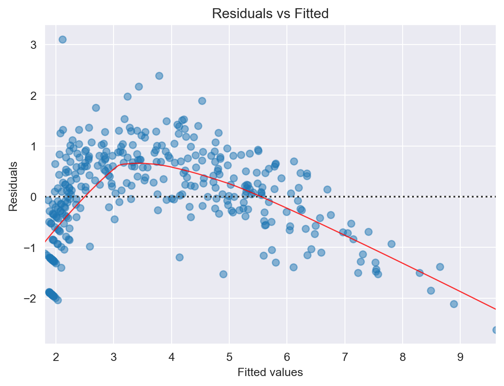
Normal Q-Q Plot
This plot shows if the residuals are normally distributed. A good normal QQ plot has all of the residuals lying on or close to the red line.
QQ = ProbPlot(model_norm_residuals)
plot_lm_2 = QQ.qqplot(line='45', alpha=0.5, color='#4C72B0', lw=1)
plot_lm_2.axes[0].set_title('Normal Q-Q')
plot_lm_2.axes[0].set_xlabel('Theoretical Quantiles')
plot_lm_2.axes[0].set_ylabel('Standardized Residuals')
# annotations
abs_norm_resid = np.flip(np.argsort(np.abs(model_norm_residuals)), 0)
abs_norm_resid_top_3 = abs_norm_resid[:3]
for r, i in enumerate(abs_norm_resid_top_3):
plot_lm_2.axes[0].annotate(i,
xy=(np.flip(QQ.theoretical_quantiles, 0)[r],
model_norm_residuals[i]))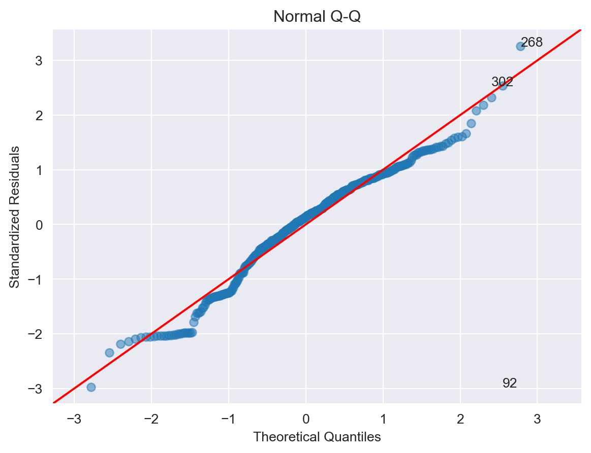
Scale-Location
This plot is a way to check if the residuals suffer from non-constant variance, aka heteroscedasticity.
plot_lm_3 = plt.figure()
plt.scatter(model_fitted_y, model_norm_residuals_abs_sqrt, alpha=0.5)
sns.regplot(
x=model_fitted_y,
y=model_norm_residuals_abs_sqrt,
scatter=False,
ci=False,
lowess=True,
line_kws={'color': 'red', 'lw': 1, 'alpha': 0.8})
plot_lm_3.axes[0].set_title('Scale-Location')
plot_lm_3.axes[0].set_xlabel('Fitted values')
plot_lm_3.axes[0].set_ylabel('$\sqrt{|Standardized Residuals|}$')
# annotations
abs_sq_norm_resid = np.flip(np.argsort(model_norm_residuals_abs_sqrt), 0)
abs_sq_norm_resid_top_3 = abs_sq_norm_resid[:3]
for r, i in enumerate(abs_sq_norm_resid_top_3):
plot_lm_3.axes[0].annotate(
i,
xy=(model_fitted_y[i],
model_norm_residuals_abs_sqrt[i]))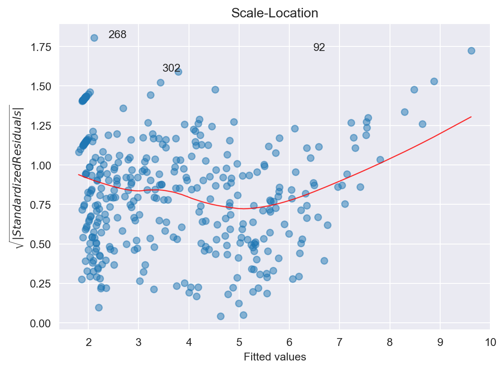
Residuals vs. Leverage
Unlike outliers, which have an unusually large y value, leverage points have extreme x values. This may not seem so bad at face value, but it can have damaging effects on the model because the β coefficients are very sensitive to leverage points. The purpose of the Residuals vs Leverage plot is to identify these problematic observations.
plot_lm_4 = plt.figure()
plt.scatter(model_leverage, model_norm_residuals, alpha=0.5)
sns.regplot(x=model_leverage, y=model_norm_residuals,
scatter=False,
ci=False,
lowess=True,
line_kws={'color': 'red', 'lw': 1, 'alpha': 0.8})
plot_lm_4.axes[0].set_xlim(0, np.max(model_leverage)+0.01)
plot_lm_4.axes[0].set_ylim(-3, 5)
plot_lm_4.axes[0].set_title('Residuals vs Leverage')
plot_lm_4.axes[0].set_xlabel('Leverage')
plot_lm_4.axes[0].set_ylabel('Standardized Residuals')
# annotations
leverage_top_3 = np.flip(np.argsort(model_cooks), 0)[:3]
for i in leverage_top_3:
plot_lm_4.axes[0].annotate(i,
xy=(model_leverage[i],
model_norm_residuals[i]))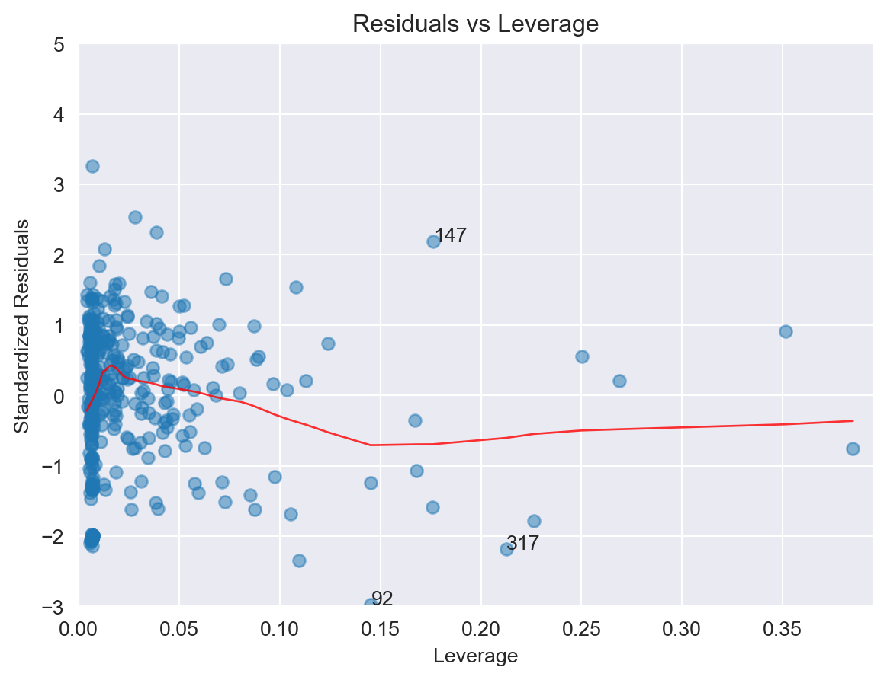
def cookdplot(model, ax=None):
if ax is None:
fig, ax = plt.subplots()
cooks_d = model.get_influence().cooks_distance[0]
ax.vlines(range(len(cooks_d)),0,cooks_d)
# annotations
cookd_top_3 = np.flip(np.argsort(cooks_d), 0)[:3]
for i in cookd_top_3:
ax.annotate(i, xy=(i, cooks_d[i]),color = 'C3')
ax.set_title("Cook's Distance" , fontweight="bold")
ax.set_xlabel('Obs. Number')
ax.set_ylabel("Cook's distance")
return ax
cookdplot(results2mod)
plt.show()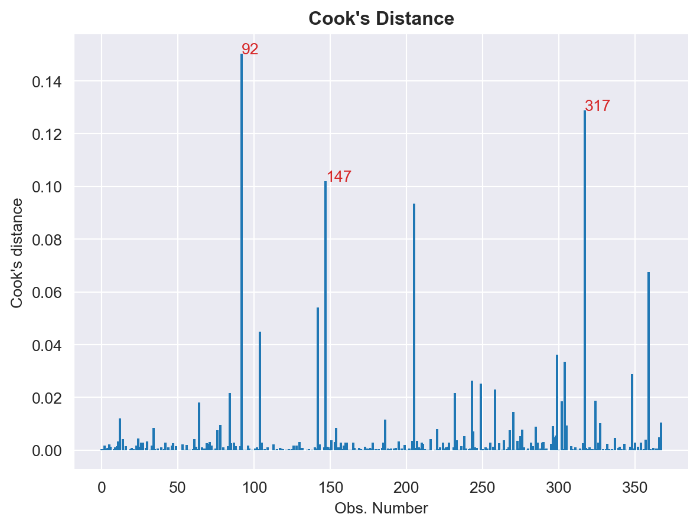
Conclusion
In this analysis, two models were compared: the initial linear regression model and a refined model with selected features. The refined model showed improved performance with higher R-squared and lower AIC values, indicating a better fit. The selection of features based on statistical significance helped in enhancing the model’s predictive accuracy. Ultimately, the refined model is preferred for predicting the number of electric vehicles in a given zip code due to its better performance metrics and more robust feature selection process.